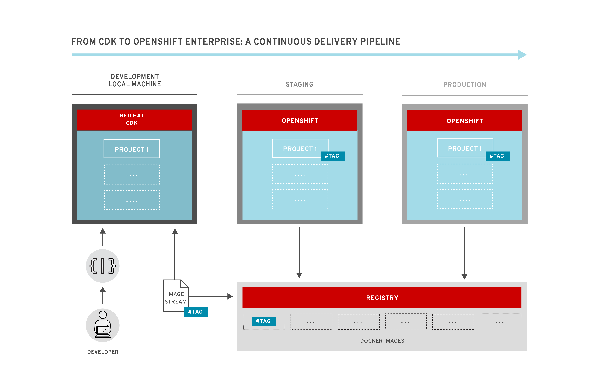

Living the Continuous Delivery Dream
Continuous ...
Continuous Integration
Continuous Deployment
Continuous Delivery
A long time ago, on a dev team far, far away...
"It works on my machine"
Agile
Dev Ops!
It works on my machine
Development == Production ...ish
Orchestrate ALL the things!
Kubernetes
OpenShift
